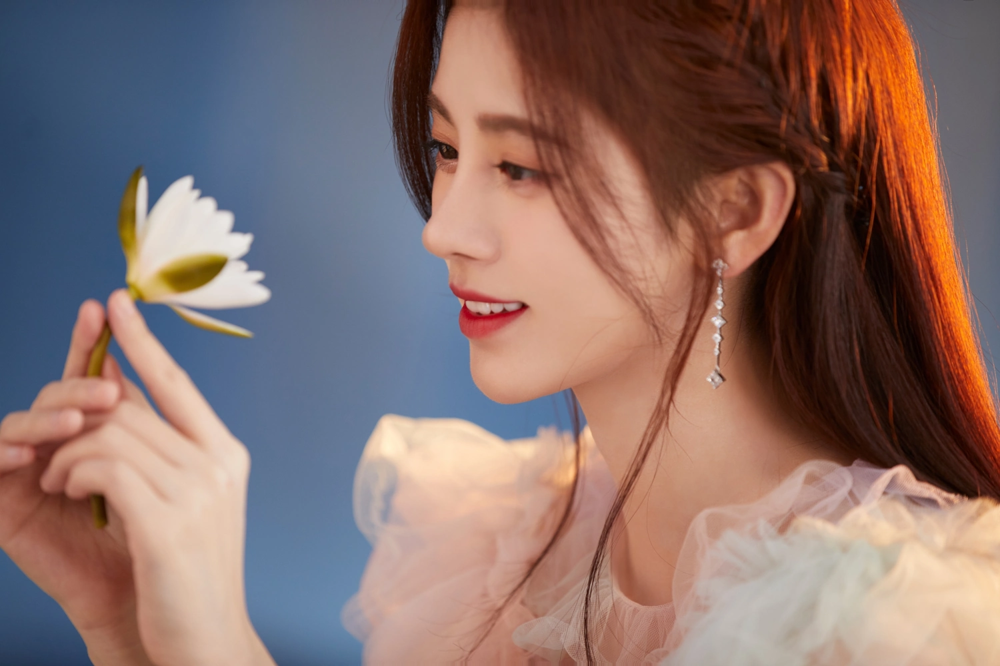
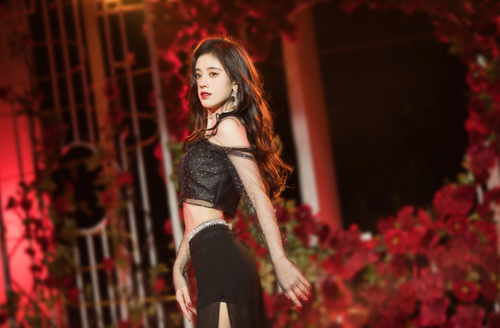
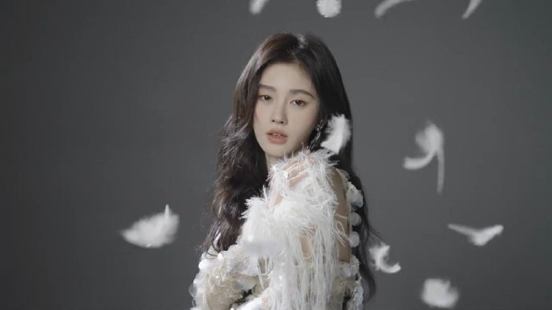
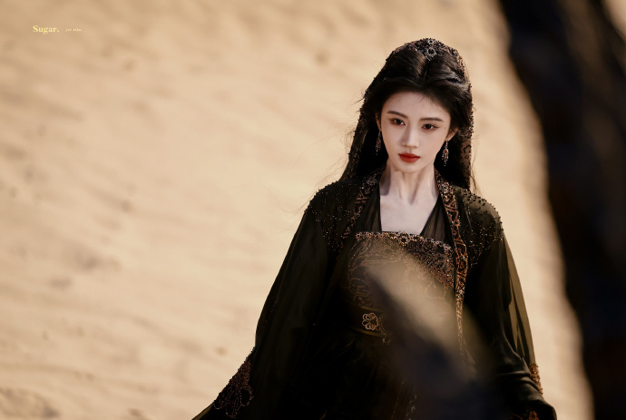
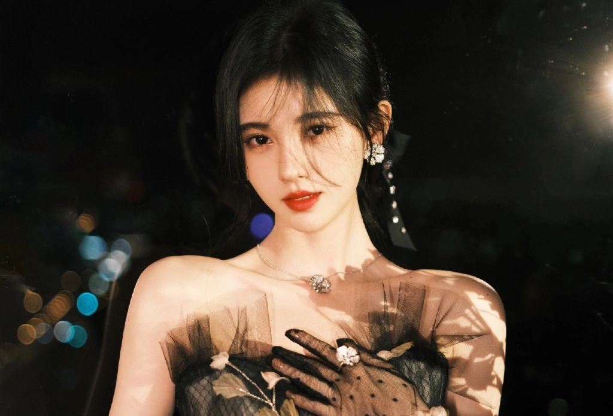

鞠婧祎，艺名Cecily，是一位中国内地的影视女演员和流行乐歌手，1994年6月18日出生于四川省遂宁市。她于2013年11月2日作为女子偶像团体SNH48的成员正式出道，并在随后的两年里在SNH48的总选举中分别获得了第4位和第2位的好成绩。
在演艺方面，鞠婧祎有着丰富的经历。2016年，她主演了个人首部玄幻剧《九州天空城》，并在同年主演了古装热血剧《热血长安》。2017年，她成为了SNH48首位总选举连霸成员，并晋升为SNH48明星殿堂成员，成立了个人工作室。此外，她还获得了第24届东方风云榜音乐盛典年度飞跃歌手奖，并在2018年获得第25届东方风云榜年度跨界艺人奖。
鞠婧祎还参与了多个电视节目和音乐作品的制作。她在2019年参加了中央广播电视总台元宵晚会和湖南卫视元宵晚会，并主演了神话剧《新白娘子传奇》。2020年，她还参加了中央电视台春节联欢晚会。
2013年8月，19岁的鞠婧祎通过层层选拔，以票选第一的成绩，从47976名参选者中脱颖而出，成为了女子演艺团体SNH48的35名二期生成员之一 ；11月，经过近三个月训练与考核，随团体参加《剧场女神》公演，并由此正式出道。
2016年，鞠婧祎主演了个人首部古装玄幻剧《九州天空城》，其在剧中饰演的是美丽高贵，却暗藏心机的羽族郡主，第一美人雪飞霜，而该剧的插曲《醉飞霜》也由她演唱；同年，她还主演了古装热血探案剧《热血长安》，并在剧中饰演婉约俊秀，才智惊人的女主角上官紫苏；8月，其为都市剧《麻辣变形计》演唱的主题曲《Fighting Day》上线；10月，鞠婧祎发行了柔美风格的首张个人EP《每一天》；12月，凭借“雪飞霜”一角获得腾讯视频星光大赏年度新锐电视剧女演员奖 。
2017年，鞠婧祎领衔主演了个人首部都市青春励志剧《游泳先生》，并在剧中饰演虽家道中落，却依然乐观面对人生的女主角宋茶茶；3月，她还获得了第24届东方风云榜年度最佳飞跃艺人奖；6月，发行情歌EP《等不到你》；8月8日，特别出演的古装仙侠偶像剧《轩辕剑汉之云》首播，她在剧中饰演的兰茵，清丽温婉且柔美多情，身份则是山海界应龙之女；12月，发行单飞后的首支个人单曲《分裂时差》；其演唱的单曲《想你了》则于随后获得了第十届咪咕音乐盛典年度十大金曲的荣誉；而鞠婧祎的出道四周年个人纪录片《星梦之光》也于年底在各视频平台播出；与此同时，她还连续三年入选TC Candler全球百大最美面孔排行榜，并跻身前十，名列第八位。
2018年伊始，鞠婧祎便接连获得了微博之夜微博年度进取艺人；第25届东方风云榜年度跨界艺人奖；2月9日，在经过了107天拍摄后，其领衔主演的民国悬疑爱情剧《请赐我一双翅膀》杀青，鞠婧祎在剧中饰演的女主角林九歌，原本是位气质文雅的留洋高材生，却在经历一系列磨难后，蜕变为了勇敢坚毅的民国奇女子，而该剧的片尾曲《一双翅膀》也由她演唱；6月25日，主演的古装传奇剧《芸汐传》首播，其在剧中饰演开朗俏皮，医术、毒术精妙的天才小毒妃韩芸汐，同时，她还为该剧演唱了推广曲《落花成泥》、片尾曲《叹云兮》，该剧播放量最终突破45亿次，鞠婧祎个人也因此获得了首届中加电视节最佳网络剧演员奖；10月18日，开始以节目召集人身份参加国风文化推广唱演秀《国风美少年》，而其在节目中则凭借对国风舞台表演的理解，以及歌手的唱跳经验给予选手们意见和帮助；年末，她还连续获得了网易云国风极乐夜国风新锐女歌手、爱奇艺尖叫之夜年度戏剧潜力艺人奖。
2019年2月19日，鞠婧祎第一次参加了中央广播电视总台元宵晚会，并在晚会上表演了小品《快说，我愿意》；随后，她还在湖南卫视元宵喜乐会上演唱了歌曲《远走高飞》；4月3日，领衔主演的古装神话爱情剧《新白娘子传奇》播出，其在剧中饰演的女主角白素贞，善良单纯，仙容绝色、她是修炼千年的美丽精灵，亦是为情所困的痴情之人，该剧在播出后则在海外地区赢得了不俗的口碑，而鞠婧祎个人也因此获得了颇高关注；6月18日，发行个人单曲《孤独与诗》；11月8日，鞠婧祎发行了青春恋爱主题的第三张个人EP《恋爱告急》；12月，她还获得了爱奇艺尖叫之夜年度戏剧突破艺人的荣誉。
2020年1月24日，鞠婧祎首次参演中央广播电视总台春节联欢晚会，并与其他几位艺人合作表演了小品《喜欢你喜欢我》；5月，她还在湖南长沙参演了"青春万岁"—五四青年节联欢晚会；7月19日，鞠婧祎参加了第27届“东方风云榜”音乐盛典，而她在盛典上则获得了“最佳舞台演绎”和“年度最具突破艺人”两项荣誉；7月23日，领衔主演的古风励志校园剧《漂亮书生》播出，其在剧中饰演的女主角雪文曦，虽家境贫寒，却美丽聪慧，既是清秀温婉的小家碧玉，亦是儒雅俊俏的学堂书生；而她与曾舜晞搭档主演的古装剧《慕南枝》也于同日开机；8月27日，鞠婧祎还连续第二年入选福布斯中国名人榜，并上升到了第84位；10月21日，与张哲瀚搭档主演的轻古风甜爽剧《如意芳霏》开播，她在剧中的角色是坚强聪慧，机敏活泼的女主角傅容，同时，鞠婧祎也为该剧演唱了片头曲《芙蓉》、插曲《古画》，片尾曲《梦渡》；12月31日，她还参演了《“美好有你”浙江卫视跨年晚会》。
2021年1月15日，鞠婧祎发行个人单曲《过去完成时》 ,2月，参加北京电视台春节联欢晚会，其在晚会上则参与表演了歌舞节目《少年》 、《相约北京》 ；5月13日，为电视剧《风暴舞》献唱的插曲《倒流》上线 ；5月18日，为南京博物院献唱的文物推广曲《琢光曲》上线 ；8月26日，与郑业成搭档主演的现代奇幻爱情剧《满月之下请相爱》播出，她在剧中饰演了温柔甜美的女主角雷初夏 ；10月17日，其与曾舜晞搭档主演的古装剧《嘉南传》在腾讯视频和爱奇艺播出，鞠婧祎饰演的则是嘉南郡主姜保宁 ；12月31日，参加2022迎冬奥BRTV环球跨年冰雪盛典，演唱歌曲《入海》 。
2022年1月10日，鞠婧祎参加的小芒年货节晚会在湖南卫视、芒果TV同步直播 ，在晚会上她则与陈立农合作翻唱了歌曲《花海》 ；同年，她还主演了郭德纲执导的民国喜剧片《粉墨江湖》 ；11月9日，在河南卫视举办并播出的《国潮盛典》上带去国风音乐作品《灯火流光》 ；随后，鞠婧祎的出道九周年纪念实体专辑《IX》发行，而其也首次以总监制的身份参与了专辑的创作 ；11月25日，她还参加了第29届东方风云榜音乐盛典 ；12月31日，参加浙江卫视美好跨年夜，演唱歌曲《千年等一回》《恋爱告急》
2023年1月14日，鞠婧祎参加了快手老铁联欢晚会 ，并在晚会上演唱了歌曲《晚风告白》《Be my POI》；2月4日，发行生物股长单曲《SAKURA》的中文版《花》 ；6月1日，其与郭俊辰搭档主演的轻古风仙侠剧《花戎》播出 ，饰演角色则为凤凰转世的女主角魏枝；12月31日，参加江苏卫视跨年演唱会，她在晚会上除了演唱个人单曲《恋爱告急》 ，还参与演唱了歌曲《青花瓷》。
2024年1月17日，鞠婧祎与陈哲远、毛晓慧、茅子俊联袂主演的古装仙侠爱情剧《仙剑四》播出 ，她在剧中饰演的女主角韩菱纱，则是位一袭红裙，轻盈惬意，且聪明慧黠的仗义女侠 ，而其为该剧演唱的菱纱主题曲《如纱》也同步上线 ；2月10日，参加的春满东方龙耀追光·东方卫视春节晚会播出 ；3月15日，与刘学义搭档主演的古装言情探案剧《花间令》播出 ；6月17日，参加湖南卫视的618开心夜 ；同年，她还参加了GLASS杰作大赏 ；9月16日，在河南卫视播出的中秋奇妙游晚会上演唱歌曲《时光晃呀晃》；而其参加的花好月圆会·bilibili中秋漫游夜晚会也于同日播出 ；10月12日，参加北京卫视与抖音合作举办的美好奇妙夜，并演唱个人单曲《落》；10月27日，参加王者荣耀共创之夜，表演节目《魔女大大大冒险》；随后，她还出席了VOGUE时尚之力盛会；11月22日，特别出演的警匪动作悬疑片《金钱堡垒》上映